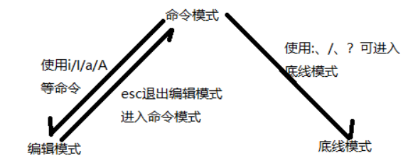

Linux中vim的使用
目录
vi和vim都是Linux中的编辑器，不同的是vim比较高级，可以视为vi的升级版本。vi使用于文本编辑，但是vim更适用于coding。
1、三种模式
- 命令模式 黄绿色
- 插入模式 命令模式下输入
i，变蓝色 。按ESC退出插入模式，回到命令模式 - 行末模式（底线模式） 命令模式下输入
:
三种模式的互相变换如图所示：

2、进入vim
vim <文件名> # 进入或创建文件； 所有文件都能用vim打开
3、退出vim
在末行模式下：
:q退出:wq保存并退出:wq!强制保存并退出:q!强制退出
4、移动光标
|
|
5、输入（插入）
命令模式下：
-
i从光标所在位置前开始插入 -
I在当前非空格行首插入 -
a从光标所在位置后面开始输入 -
A在当前行尾还是输入 -
o在光标所在行下方新增一行并输入模式 -
O在当前上面一行插入
6、删除与复制
命令模式下：
| 命令字符 | 介绍 |
|---|---|
dd(双击d) |
剪切当前行 |
num + dd(双击d) |
剪切当前行（例如10dd可以删除10行） |
yy |
拷贝当前行 |
p |
将内容粘贴至光标所示位置 |
u |
撤销 |
Ctrl+r |
反撤销 |
7、块状操作
命令模式下：
-
v块选择 -
Ctrl+v列块选择 （输入命令后移动光标选择区域） -
多行注释 命令模式下：
Ctrl+v选择要注释的行，shift+i，输入#然后再按两次ESC
8、搜索与替换
命令模式下：
-
/内容 向前搜索内容 （向下） -
?内容 向后搜索内容 （向上） -
n向下查找 -
N向上查找 -
:s/s1/s2替换当前行的第一个s1为s2 -
:s/s1/s2/g替换当前行中所有s1为s2 -
:%s/s1/s2/g替换文中所有的s1为s2
vim搜索设置高亮
1、临时设置：vim打开文档-->命令行形式输入：set hlsearch。
缺点：关闭文档后，下次打开，又需要重新设置一遍。
2、永久设置（推荐）：在~/.vimrc中配制-->vim ~/.vimrc-->在文件中加上set hlsearch-->然后保存退出便可。
优点：一次设置，永久生效。